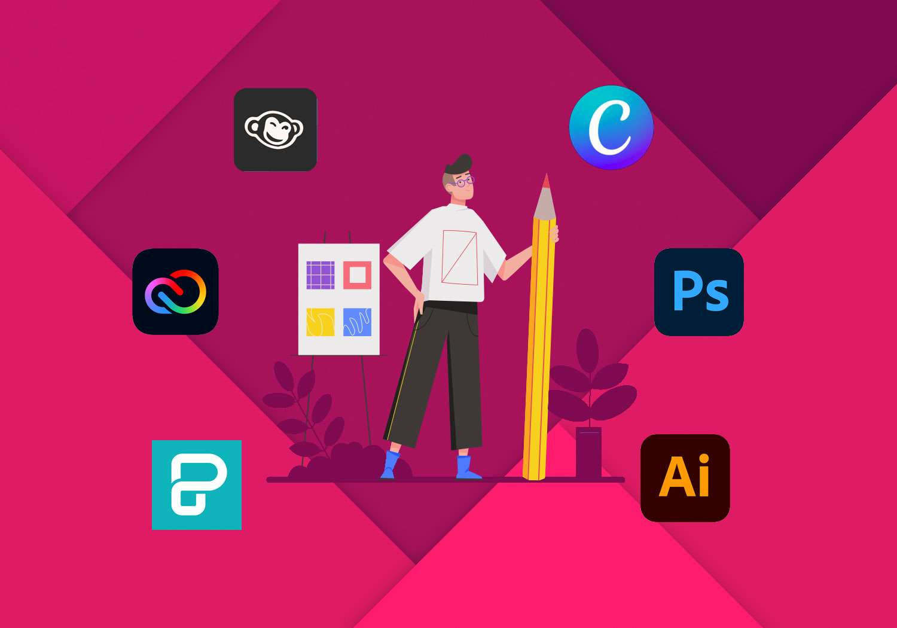
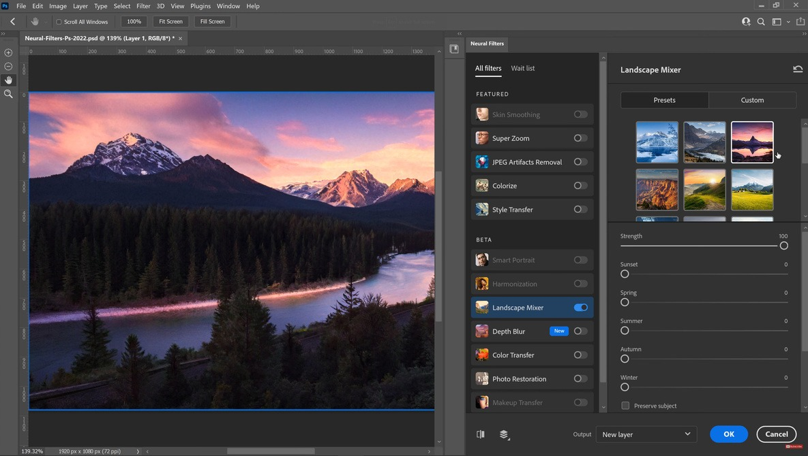
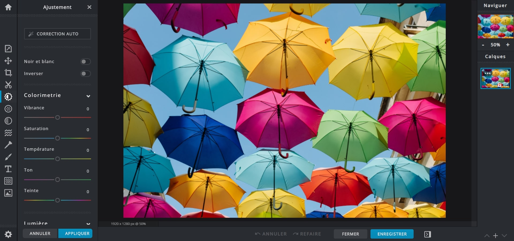
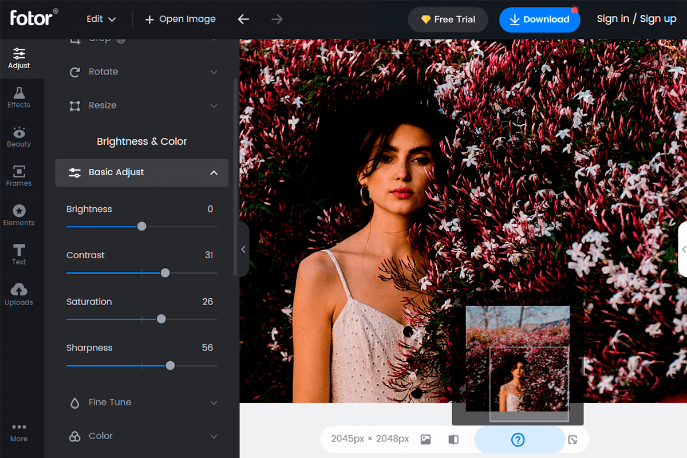
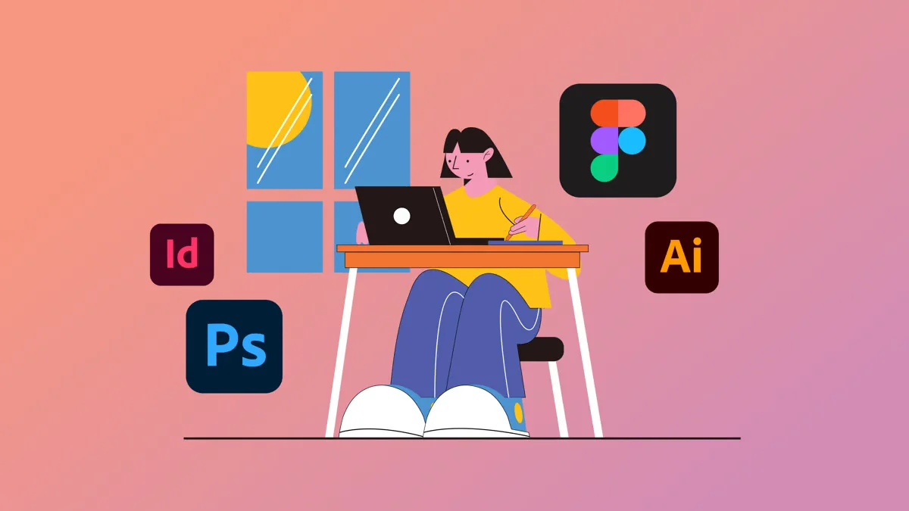

¿Qué son?.
Los programas de diseño gráfico son aquellos softwares orientados a la edición, creación y modificación de imágenes, dibujos, animaciones y videos. La finalidad de estos es, a su vez, que los creadores puedan disponer de todas las herramientas necesarias para crear conceptos nuevos y poder plasmar ideas y textos en recursos gráficos.
Los productos de los programas de diseño gráfico se pueden exportar en diversos formatos y extensiones que, posteriormente, pueden distribuirse digitalmente o imprimirse en cualquier material y tamaño.
Entre sus capacidades se incluyen manejo de vectores, capas, máscaras, pinceles, gradientes, entre otros.
¿Cuáles son?.
Software de diseño gráfico para profesionales
Los profesionales del diseño gráfico requieren herramientas avanzadas y flexibles que les permitan expresar su creatividad y cumplir con los estándares de alta calidad. A continuación, se presentan algunos de los software más populares entre los diseñadores gráficos profesionales:
- Adobe Photoshop: Es uno de los software más utilizados en la industria del diseño gráfico, ideal para la edición de imágenes y la creación de elementos gráficos complejos.
- Adobe Illustrator: Especializado en la creación de gráficos vectoriales, este software es fundamental para diseñar logotipos, iconos y elementos gráficos escalables.
- Sketch: Una herramienta de diseño de interfaz de usuario (UI) y experiencia de usuario (UX) que se ha convertido en una opción popular entre los diseñadores de producto y experiencia de usuario.
Software de diseño gráfico para principiantes
Para aquellos que se inician en el diseño gráfico, es fundamental elegir software que sean fáciles de aprender y que no requieran una gran inversión. A continuación, se presentan algunas opciones ideales para principiantes:
Canva: Una plataforma en línea que ofrece una interfaz fácil de usar y una gran variedad de plantillas y elementos gráficos para crear materiales visuales atractivos.
GIMP:Una alternativa gratuita a Adobe Photoshop, que ofrece una gran cantidad de herramientas y características para la edición de imágenes.
Inkscape: Un software de código abierto similar a Adobe Illustrator, que permite la creación de gráficos vectoriales de alta calidad.
Programas de edición de imágenes y manipulación de fotografías
Los diseñadores gráficos también utilizan programas de edición de imágenes y manipulación de fotografías para retocar y mejorar imágenes fotográficas y crear efectos visuales. Algunos de los programas más populares en esta categoría son:
Adobe Photoshop: Un programa de edición de imágenes líder en el mercado que se utiliza para retocar y mejorar imágenes fotográficas.
Adobe Lightroom: Un programa de edición de imágenes que se utiliza para ajustar y mejorar las imágenes fotográficas en masa.
SketchUp: Un programa de diseño 3D que se utiliza para crear modelos y escenas 3D.

SOFTWARES PARA EDICION DE IMAGENES.
Adobe Photoshop.

Adobe Photoshop es el software líder mundial en edición y diseño de imágenes. Desarrollado por Adobe Systems, Photoshop fue lanzado en 1988 y rápidamente se convirtió en un estándar de la industria. Durante décadas, Photoshop ha sido la aplicación indispensable para fotógrafos, diseñadores gráficos, diseñadores de web, artistas digitales y creativos de todos los campos que necesitan producir y editar imágenes digitales de alta calidad.
La interfaz y funciones familiares de Photoshop se convirtieron en el estándar para la edición de imágenes. Y su dominio se volvió una habilidad esencial para cualquier profesional creativo. Con Adobe Photoshop, la manipulación de imágenes digitales ha alcanzado nuevos niveles de sofisticación, dando lugar a resultados impensables en la era analógica.
Características y herramientas principales:
- Capas para aplicar cambios no destructivos y ediciones incrementales.
- Herramientas de selección avanzadas como lazo, varita mágica, etc.
- Máscaras y canales alfa para selecciones y ediciones en partes específicas.
- Pinceles personalizables con controles de forma, textura, dispersión y más.
- Corrección de color profesional y ajustes con niveles, curvas, exposición.
- Edición y retoque facial para belleza, maquillaje, cambio de rasgos.
- Capacidades avanzadas con texto, 3D, composición y diseño gráfico.
Ventajas:
- Ofrece excelentes funciones para diseñar una imagen a partir de un lienzo en blanco.
- Los usuarios pueden crear imágenes dinámicas para una variedad de plataformas multimedia.
- El software es excelente para crear obras de arte a partir de una simple foto.
Desventajas:
- Se ralentiza al crear mucha animación o imágenes grandes con muchas capas.
- Con tantos matices en una sola herramienta, PhotoShop es un reto difícil de entender para usuarios novatos.
- No es gratuito y requiere de licencias.

Pixlr X.
Desarrollado originalmente en 2008 por la empresa sueca Obox, Pixlr surgió como una alternativa ligera a Photoshop orientada a usuarios casuales y novatos. Con su interfaz intuitiva y enfoque en rapidez, Pixlr permite realizar ediciones básicas y aplicar efectos atractivos a imágenes sin necesidad de descargar software.
Pixlr se distingue por su versatilidad multiplataforma, con aplicaciones web, de escritorio y móviles. El editor web es usable desde cualquier navegador sin instalación, ideal para editar donde sea. Con millones de usuarios activos, Pixlr se consolidó como una de las apps de edición de fotos más populares para usuarios casuales y no profesionales. Y continúa evolucionando con nuevas funciones que acercan las capacidades de edición de imágenes profesionales a la masa de usuarios regulares.
Características y herramientas principales:
- Interfaz simple e intuitiva, ideal para novatos.
- Herramientas básicas de edición como recortar, enderezar, ajustar colores.
- Capas para aplicar cambios de forma no destructiva.
- Selecciones, máscaras y pinceles para editar áreas específicas.
- Efectos creativos como enfoque, desenfoque, viñeteado, pixelado.
- Filtros mejorados con IA como eliminación de objetos y fondo.
- Edición avanzada con curvas, niveles, exposición y saturación.
Ventajas:
- Permite guardar su historial de trabajo dentro del navegador, pero también en un archivo.
- Tiene una gran base de datos de imágenes libres de derechos de autor para uso de fondo.
- Permite al usuario utilizar una variedad de fuentes incluso en idiomas extranjeros.
Desventajas:
- Necesita más vídeos y recursos que muestren cómo hacer ediciones básicas.

Fotor.

Fotor es una plataforma de edición de fotos en línea que está transformando cómo los usuarios casuales editan y mejoran sus fotografías mediante herramientas simples pero poderosas. Lanzado en 2012 por la empresa Everimaging Ltd., Fotor surgió con la misión de llevar funciones profesionales de edición al gran público de forma accesible.
A diferencia de editores tradicionales, Fotor se distingue por su enfoque en simplicidad, con una interfaz limpia e intuitiva ideal para novatos. Y con más de 500 millones de descargas y 90 millones de usuarios activos mensuales, Fotor se ha consolidado como una de las aplicaciones líderes en edición fotográfica amateur al alcance de todos.
Características y herramientas principales:
Herramientas básicas de ajuste de brillo, contraste, nitidez, etc.
Filtros preestablecidos para transformar el tono de las fotos.
Funciones de embellecimiento facial automatizadas.
Modo “Mejorar en un clic” para optimización instantánea.
Eliminación de objetos no deseados con borrado inteligente.
Ventajas:
Amplia gama de herramientas y funciones de edición
Interfaz amigable.
Disponible como una aplicación basada en web y una aplicación de escritorio.
Desventajas:
Algunas de las funciones avanzadas solo están disponibles con planes pagos.
El plan gratuito tiene herramientas de edición limitadas.
La aplicación de escritorio puede tardar en cargarse.

¿Como crear imagenes?.
- Selecciona un Programa de Gráficos
- Adobe Photoshop: Ideal para edición de fotos y gráficos complejos.
- GIMP: Una alternativa gratuita y de código abierto a Photoshop.
- Configura tu Lienzos
- Abre el programa y selecciona la opción para crear un nuevo archivo.
- Configura el tamaño del lienzo según tus necesidades (por ejemplo, 1920x1080 píxeles para una imagen HD).
- Selecciona la resolución adecuada (300 ppi para impresión, 72 ppi para web)
- Dibuja o Importa Elementos
- Herramientas de Dibujo: Utiliza pinceles, lápices, y otras herramientas para dibujar directamente en el lienzo.
- Importar Imágenes: Puedes importar fotos o gráficos existentes para editarlos o combinarlos.
- Añade Capas
- Crear nuevas capas para cada elemento o grupo de elementos.
- Renombrar las capas para mantenerte organizado.
- Ajustar la opacidad y el modo de fusión de cada capa para efectos especiales.
- Aplica Efectos y Filtros
- Filtros: Experimenta con filtros para añadir efectos como desenfoque, nitidez, o texturas.
- Ajustes de Color: Modifica el brillo, contraste, saturación, y otros ajustes de color para mejorar tu imagen.
- Guarda y Exporta tu Imagen
- Guarda tu trabajo en el formato nativo del programa (por ejemplo, .psd para Photoshop) para futuras ediciones.
- Exporta la imagen en el formato deseado (JPEG, PNG, SVG, etc.) para su uso final.
